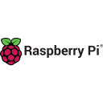

MY WORK
Tools and Technology I build with:





qualifications that support my experience in specific areas of information technology.
The Linux Foundation
Linux Foundation Certified System Administrator LFCS-1500-0462-0100 (Sept. 2015 - Sept. 2017)
Cisco Networking Academy
Introduction to Data Science
Cisco Networking Academy
Introduction to Cybersecurity
Cisco Networking Academy
Introduction to IoT
Experienced Linux Systems Administrator with a comprehensive background in providing systems administration for infrastructure, servers, web portals, databases, git version control, software development life cycles, backups, security systems, networking equipment, VoIP systems, hardware, and software. Additionally, I work as an Information Technology Professional for managers, customers, and employees.
Carbondale, IL, 62901
website: https://linuxsystemsengineer.github.io/
github: https://github.com/LinuxSystemsEngineer
linkedin: https://www.linkedin.com/in/blake-jones-linux/
Summary of Qualifications:
Experienced Linux Systems Administrator proficient in optimizing infrastructure, servers, web portals, databases, git version control, software development life cycles, backups, security systems, networking equipment, voip systems, hardware, and software. I have proven my ability to work independently and as part of a team to successfully complete projects, with experience in a variety of technologies.
Certifications:
Systems Administrator Skills:
Programming Skills:
Soft Skills:
Experience:
Advanced Computing Trends
02/18 to Present
Linux Systems Administrator, and Business Owner
Providing advanced technical support and services to customers, including Linux system administration, modern web design, and IT consulting. Authored numerous how to documents, technical manuals, and guides related to Linux server systems. Created customized virtual machines, docker containers, programming solutions, and ansible playbooks that eliminated human error and increased speed efficiency 5x. Through excellent documentation, automated programming solutions, and efficient systems, we save our customers both time and money.
Southern Illinois University Carbondale
06/2023 to 12/2024
Network Engineering Student Worker
Managing and maintaining campus area network, including layer 2 network switches and wifi devices, using command line interface. Engineered a scalable and reusable python based django rest framework datatables boilerplate with an sqlite backend, replacing legacy excel file based solutions. This implementation improved processing speed 6x, reducing processing time 83.33% and potentially saved our company both time and money.
EMAC, Inc
09/2011 to 02/2018
Systems Administrator
Administered and optimized the company's infrastructure, including servers, web portals, databases, git version control, software development life cycles, backups, security systems, networking equipment, voip systems, computers, peripherals, hardware, and software. Provided technical support for managers, employees, and customers. Spearheaded initiatives that increased system uptime from 88% to 98%, resulting in a 10% reduction in downtime and enhanced system reliability. The implementation of these projects saved our company both time and money.
Marion Reservation Center
10/2006 to 02/2007
IT Help Desk Technician
Provided remote technical support to hotel guests, primarily helping them connect to the hotel's wifi network. Performed general network support to the hotel's general managers, supervisors, and employees.
Southern Illinois University Carbondale
08/2005 to 08/2006
Student Network Support Specialist
Provided comprehensive computer and network support to students, faculty, and employees at Southern Illinois University Carbondale's Morris Library. Worked as both a computer technician and network technician, handling a wide range of duties. Played a key role in relocating and reconnecting desktop PCs to various campus locations during the library's renovation period.
Education:
Bachelor of Science, Majoring in Information Technology
Southern Illinois University, Carbondale Illinois 62901
Expected Graduation: Dec 2025
Dean's List: Fall 2024
Dean's List: Spring 2024
Dean's List: Summer 2023
Associate of Applied Science, Majoring in Computer Information Systems
John A. Logan College, Carterville Illinois 62918
Graduated: May 2005
Dean's List: Spring 2025
Tools and Technology I build with:
As a Linux Systems Administrator, I ensure stable and secure system operations, minimizing downtime, and
enhancing productivity.
My programming skills allow me to automate tasks and build custom solutions, increasing efficiency, and
reducing operational costs.
With great interpersonal skills, I excel in team collaboration, clear communication, effective problem
solving, ensuring project completion, and customer satisfaction.
Linux Administrator
Programming
Interpersonal
there are three main parts
Carbondale, Illinois USA
Github: https://github.com/LinuxSystemsEngineer
LinkedIn: https://www.linkedin.com/in/blake-jones-linux/